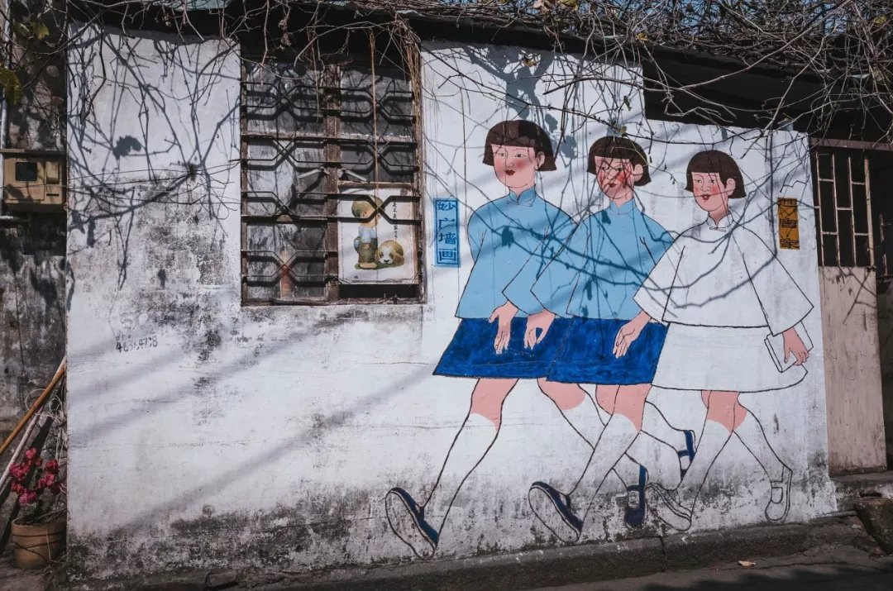
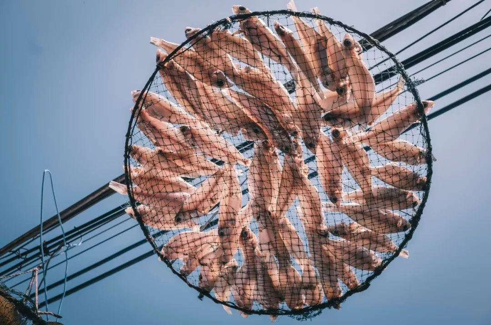
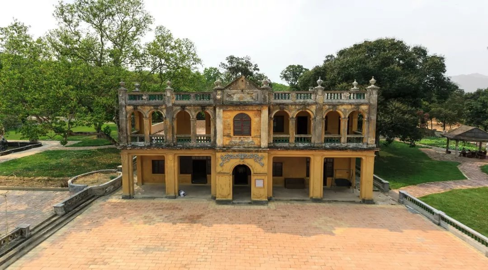

千年南粤 魅力海珠

最新消息
第十五届中国国际航空航天博览会将于2024年11月12日至17日在珠海举办
2023-12-31
2023-12-31




唐家湾镇
国民政府执政的时期，为了致敬孙中山，珠海所在的香山县已更名为中山县。被国民政府定为模范县的中山县，在中华民国首任内阁总理、珠海人唐绍仪的争取下，中山县的县政府从石歧搬到了珠海的唐家湾。绍仪按照省政当局的法规，重新开始筹备地方自治。他再次按“无税港口”的期望，开始唐家湾中山港的建设。一时间，唐家湾的道路被修筑，陋习被革除，贸易得到振兴，珠海地区的面貌焕然一新。
淇澳岛
中日甲午战争之后签订的《马关条约》，让西方列强更肆无忌惮瓜分中国领土。不愿坐以待毙的清政府，着手自己开通一些商贸繁荣的口岸。这其中，就包括了靠近港澳的珠海。今天珠海香洲区的香埠路一带，前身正是清政府自己开办的香洲商埠。一座现代化的港口城市正在被建设起来——造深水港口，设学校、公园和博物馆还在商埠内实行民主管理制度。“免税口岸”的概念，也被规划进它的未来。
栖霞仙馆
栖霞仙馆，其主人翁是香港太古洋行买办华人（祖籍会同村）莫仕扬嫡孙，为纪念其原配夫人郑玉霞，于清宣统二年（公元1910年）建造，占地面积十五亩（1万平方米）的中西合璧庭园建筑群，栽植有名贵花果数目而绿荫翠盖，鸟语花香，环境宜人，景色优美特色园林。1934年，中山县发生兵变，唐绍仪被迫辞职。新的县长把县政府迁回了石歧，唐家湾从此一蹶不振，中山港的建设也造搁置。浮浮沉沉，珠海在抓住机遇后，很快又与它告别
珠海航展
促成港珠澳大桥建设的时任市长梁广大，在1995年还迎难而上，促成建设了长达4000米的飞机跑道，用长远的眼光为珠海开辟出了广阔的交通空间。每两年一届的中国航展，都在珠海举办。从1996年成功举办首届航展以来，发展成为集贸易性、专业性、观赏性为一体，代表当今国际航空航天业先进科技主流，展示当今世界航空航天业发展水平的蓝天盛会，已是世界五大最具国际影响力的航展之一。